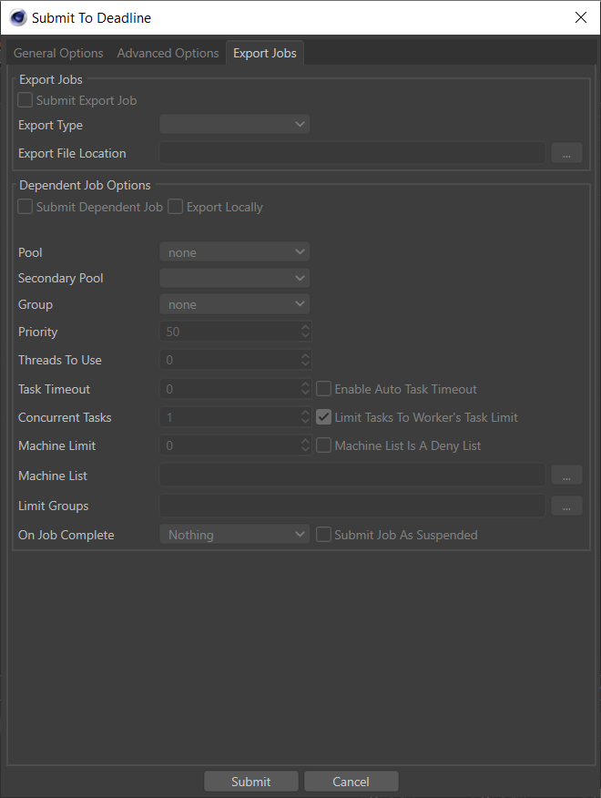
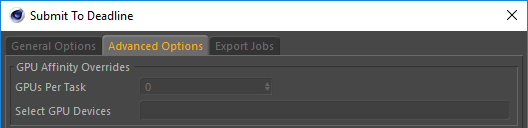
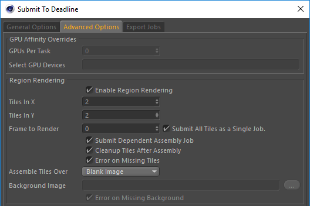
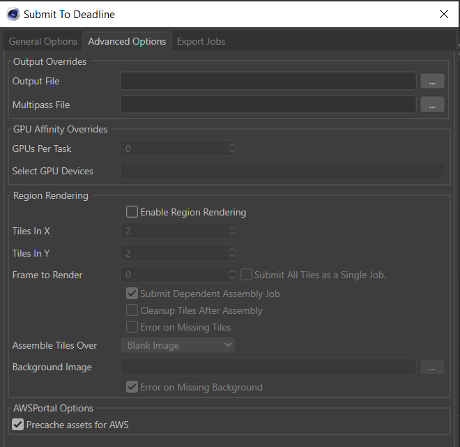
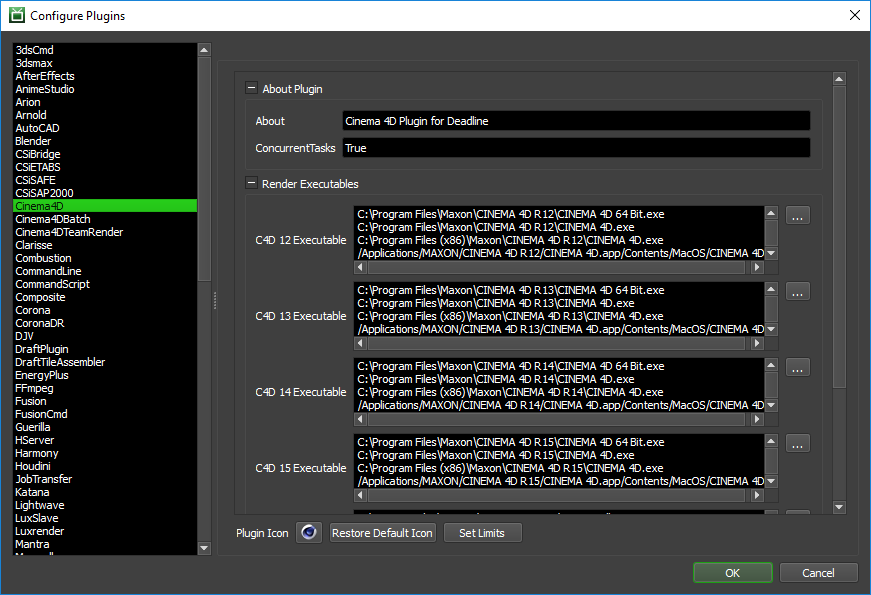
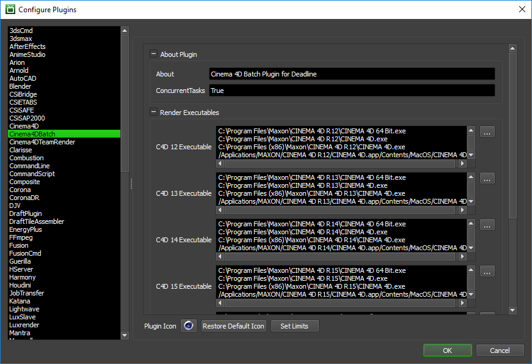
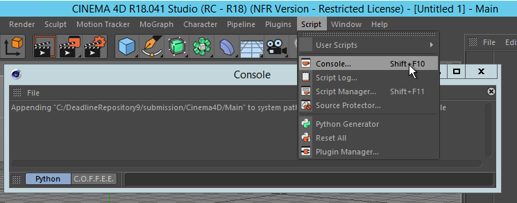

Cinema 4D¶
Job Submission¶
You can submit jobs from within Cinema 4D by installing the integrated submission script, or you can submit them from the Monitor. The instructions for installing the integrated submission script can be found further down this page.
To submit from within Cinema 4D:
For R15 and earlier: “Plugins -> Submit To Deadline”
For R16 to R20: “Python -> Plugins -> Submit To Deadline”
For R21 and later: “Extensions -> Submit To Deadline”
Submission Options¶
The general Deadline options are explained in the Job Submission documentation, and the Draft/Integration options are explained in the Draft and Integration documentation.
Cinema 4D Options
Cinema 4D File: The scene file to be rendered.
Take Name/List: The name of the take to render. This is optional, and if left blank, it will default to the current take (supported in C4D R17 and onwards).
Include Main take in All takes: If enabled, the “Main” take will be included in all takes.
Frame List: The list of frames to render.
Submit All Frames as a Single Task: If a contiguous frame range with a frame step submitted (eg. 1-10x2) then all of the selected frames will be submitted as a single task.
Use Task Frame Range: If enabled, the frame range in each individual task will be used instead of the global frame range.
Frames Per Task: This is the number of frames that will be rendered at a time for each job task.
Submit Cinema 4D Scene: If this option is enabled, the scene file will be submitted with the job, and then copied locally to the Worker machine during rendering.
Threads/Threads To Use: The maximum number of threads to use for rendering. Entering a value of 0 indicates no maximum number of threads. When a Worker is determining the number of threads to use, it uses the minimum of this number and the number of CPU(s) that the Worker’s affinity is set to
Export Project Before Submission: If your project is local, or you are rendering in a cross-platform environment, you may find it useful to export your project to a network directory before the job is submitted.
Build To Force: You can force 32 or 64 bit rendering with this option.
Enable Local Rendering: If enabled, the frames will be rendered locally, and then copied to their final network location.
Don’t Load OpenGL: If checked, OpenGL will be disabled for Cinema 4D. It is useful to avoid loading OpenGL libraries when running as a service. Do NOT use this option if you are using the Hardware OpenGL renderers inside of Cinema 4D. Default: False.
Use Batch Plugin: If checked, the Cinema 4D batch plugin will be used to render Cinema 4D jobs, which keeps the scene file loaded in memory between tasks.
Version: The version of Cinema 4D to render with.
Cinema 4D Output Options
Use Default Output From Scene: Enable this option to use the output path defined in the scene file.
Filename Prefix: If overriding the output, this is the file name prefix.
Output Folder: If overriding the output, this is the folder that the frames will be saved to.
Use Default Multipass Output From Scene: Enable this option to use the multipass output path defined in the scene file.
MP Filename Prefix: If overriding the multipass output, this is the file name prefix.
MP Output Folder: If overriding the multipass output, this is the folder that the frames will be saved to.
Script Job Options
Script Jobs use the Cinema 4D Batch plugin and do not force a particular render.
Submit A Cinema4D Script Job (Python): Enable this option to submit a custom Python script job. This script will be applied to the scene file that is specified.
Python Script File: The Python script file to use *.py.
Export Jobs¶
If you are submitting an Arnold, Octane, or Redshift job you may choose to submit an export job in the Export Jobs Tab
Export jobs will export the scene file then render the scene in the appropriate standalone Renderer. The export specific job options are:
Export File Location: The location that the scene file will be exported to.
Submit Dependent Job: If this option is set to true, a dependent Render job will be submitted.
Export Locally: If this option is set to true, the scene file will be exported on the submitting machine. (This option is not currently supported with Octane)
GPU Affinity¶
If rendering with Redshift, you may choose which GPUs to use in the Advanced Options tab.
GPUs Per Task: If set to 0 (the default), then RedShift will be responsible to automatically choose the GPUs to use for rendering.
If this is set to 1 or greater, then each task for the job will be assigned specific GPUs. This can be used in combination with concurrent tasks to get a distribution over the GPUs. For example:
if this is set to 1, then tasks rendered by the Workers thread 0 would use GPU 0, thread 1 would use GPU 1, etc.
if this is set to 2, then tasks rendered by the Workers thread 0 would use GPUs {0,1}, thread 1 would use GPUs {2,3}, etc.
Select GPU Devices: A comma separated list of specific GPU device Id(s) can be entered instead of using the above ‘GPUs Per Task’ option (which must be set to “0”). Valid examples include: “0” or “1” or “0,1” or “2,4” without the quotation marks. Note, “Concurrent Tasks” must be set to “1” only.
Region Rendering¶
Region rendering is supported in Cinema 4D. You can also submit a dependent assembly job to assemble the image when the main region job completes.
The following options are available:
Enable Region Rendering: If enabled, the frame will be split into multiple tiles that are rendered individually and can be assembled after.
Tiles In X: The number of tiles to divide the regions horizontally.
Tiles In Y: The number of tiles to divide the regions vertically.
Frame to Render: The frame to be region rendered.
Submit All Tiles as a single Job: If enabled, a single frame will be submitted with all tiles in a single job, otherwise each tile will be submitted as a separate job with each frame being a separate frame.
Submit Dependent Assembly Job: Submit a job dependent on the region job that will assemble the tiles.
Cleanup Tiles after Assembly: If enabled, the tiles will be deleted after assembly.
Error on Missing Tiles: If enabled, the assembly job will fail if any of the tiles are missing.
Assemble over: Determine what the Draft Tile Assembler should assemble over be it a blank image, previous output or a specified file.
Background Image File: If “specified file” option above is selected, then browse for a background image file to assemble the tile renders with.
Error on Missing Background: If enabled, the Draft Tile Assembler job will fail if the background file is missing.
AWSPortal Options¶
AWS asset server pre-caching is supported when running AWS Portal. This allows you to pre-cache assets for jobs. For more information on asset pre-caching see the overview.
The following options are available:
Precache assets for AWS: If enabled, all assets will be pre-cached in the AWS S3 bucket.
Cross-Platform Rendering Considerations¶
Cinema4D Plugin¶
In order to perform cross-platform rendering with Cinema 4D, you must setup Mapped Paths so that Deadline can swap out the Scene and Output file paths where appropriate. You can access the Mapped Paths Setup in the Monitor while in power user mode by selecting Tools -> Configure Repository. You’ll find the Mapped Paths Setup in the list on the left.
When submitting the Cinema 4D job for rendering, you should enable the Export Project Before Submission option, and choose a network location when prompted for the export path. This will strip any absolute asset paths and make them relative to the scene file, and will also ensure the option to submit the Cinema 4D scene file with the job is disabled.
If you don’t enable the Export Project Before Submission option, you need to manually export the project to a network location. Then, you must submit the exported scene file from the Submit menu in the Monitor and you need to specify the output and/or multipass output paths in the submitter. Make sure the option to submit the Cinema 4D scene file with the job is disabled. If you leave it enabled, the scene file will be copied to and loaded from the Worker’s local machine, which will break the relative asset paths.
Cinema4D Batch Plugin¶
In order to perform cross-platform rendering with Cinema 4D, you must setup Mapped Paths so that Deadline can swap out the Project and Output paths where appropriate. You can access the Mapped Paths Setup in the Monitor while in power user mode by selecting Tools -> Configure Repository. You’ll find the Mapped Paths Setup in the list on the left.
When performing cross-platform rendering all absolute paths will be mapped, if your scene contains any relative paths then ensure that the option to submit the Cinema 4D scene is disabled.
Plugin Configuration¶
You can configure the Cinema 4D plugin settings from the Monitor. While in power user mode, select Tools -> Configure Plugins and select the Cinema 4D plugin from the list on the left.
Cinema4D¶
Render Executables
C4D Executable: The path to the C4D executable file used for rendering. Enter alternative paths on separate lines. Different executable paths can be configured for each version installed on your render nodes. Note, in Cinema 4D R16 and onwards, using
Commandline.exeinstead ofCINEMA 4D.exeon Windows is recommended as it will stop a command prompt window from appearing during rendering.Set Linux Environment: If enabled, Deadline will set both the LD_LIBRARY_PATH, PYTHONPATH and PATH environment variables so C4D will be able to load all of it’s required modules.
Logging
- Redshift Log Verbosity: Set the level of verbosity for the Redshift logs written to the Render Log. Verbosity levels include Error, Warning, Info, Detailed, Debug, DebugVerbose, and Max. The default is set to Debug.
Note
When submitting a job using the Cinema4D plugin with Redshift as the renderer, render progress will be shown for all levels of Redshift Log Verbosity, except Error and Warning.
Arnold Options
Abort On Arnold License Fail: If enabled, the render will fail if Arnold cannot get a license. If disabled, Arnold will render with a watermark if it cannot get a license (Only applies when Arnold is the Renderer).
Cinema4DBatch¶
Render Executables
C4D Executable: The path to the C4D executable file used for rendering. Enter alternative paths on separate lines. Different executable paths can be configured for each version installed on your render nodes. Note, in Cinema 4D R16 and onwards, using
Commandline.exeinstead ofCINEMA 4D.exeon Windows is recommended as it will stop a command prompt window from appearing during rendering.
Logging
Log Script Contents to Render Log: If enabled, the full script that Deadline is passing to Cinema 4D will be written to the render log. This is mainly useful for debugging purposes.
- Redshift Log Verbosity: Set the level of verbosity for the Redshift logs written to the Render Log. Verbosity levels include Error, Warning, Info, Detailed, Debug, DebugVerbose, and Max. The default is set to Debug.
Note
When submitting a job using the Cinema4DBatch plugin with Redshift as the renderer, Redshift Log Verbosity must be set to Debug, DebugVerbose, or Max, in order to view render progress.
Arnold Options
Abort On Arnold License Fail: If enabled, the render will fail if Arnold cannot get a license. If disabled, Arnold will render with a watermark if it cannot get a license (Only applies when Arnold is the Renderer).
Integrated Submission Script Setup¶
The following procedures describe how to install the integrated Cinema 4D submission script. This script allows for submitting Cinema 4D render jobs to Deadline directly from within the Cinema 4D editing GUI.
You can either run the Submitter installer or manually install the submission script.
Submitter Installer¶
Run the Submitter Installer located at
<Repository>/submission/Cinema4D/Installers.
Manual Installation¶
Copy the file:
[Repository]/submission/Cinema4D/Client/DeadlineC4DClient.pyp to [Cinema 4D Install Directory]/plugins
Restart Cinema 4D, you can now submit jobs from within Cinema 4D
Custom Sanity Check¶
A CustomSanityChecks.py file can be created alongside the main SubmitC4DToDeadline.py submission script (in [Repository]\submission\Cinema4D\Main), and will be evaluated if it exists. This script will let you set any of the initial properties in the submission script prior to displaying the submission window. You can also use it to run your own checks and display errors or warnings to the user. Here is a very simple example of what this script could look like:
import c4d
from c4d import gui
def RunSanityCheck(dialog):
dialog.SetString(dialog.dialogIDs["DepartmentBoxID"], "The Best Department!")
dialog.SetLong(dialog.dialogIDs["PriorityBoxID"], 33)
dialog.SetLong(dialog.dialogIDs["ConcurrentTasksBoxID"], 2)
gui.MessageDialog("This is a custom sanity check!")
return True
The available dialog IDs can be found in the SubmitC4DToDeadline.py script mentioned above. They are defined near the top of the SubmitC4DToDeadlineDialog class. These can be used to set the initial values in the submission dialog.
Finally, if the RunSanityCheck method returns False, the submission will be cancelled.
Troubleshooting¶
Diagnosing Integrated Submitter Problems¶
Occasionally you may be faced with an issue during job submission. It may be that the dialog won’t display or that pressing the “submit” button may not create a job. If you believe you’ve properly installed the integrated submitter as outlined above, it may be time to investigate Cinema 4D’s console log.
The submitter within Cinema 4D is written in Python and so we can sometimes find the error within Cinema’s Python console. You can open the console under the “Script” menu:
If the problem is not immediately obvious from the console log, please reach out to the Thinkbox support team. When you do, provide the contents of the log and the steps to reproduce along with a test scene if applicable.
FAQ¶
Which versions of Cinema 4D are supported?
Cinema 4D 12 and later are supported.
When I use Adobe Illustrator files as textures, the render fails with “Asset missing”
While Cinema 4D is able to use AI files in workstation mode, there is often problems when rendering in command line mode. Convert the AI files to another known type such as TIFF or JPEG before using them.
Sometimes when I open the submission dialog in Cinema 4D, the pool list or group list are empty.
Simply close the submission dialog and reopen it to repopulate the lists.
Does rendering with Cinema 4D with Deadline use up a full Cinema 4D license?
There are separate Cinema 4D command line licenses that are required to render with Deadline. Please contact Maxon for more information regarding licensing requirements.
Can Deadline render with Cinema 4D’s Net Render Client software?
No. It isn’t possible for 3rd party software such as Deadline to control Cinema 4D’s Net Render Client, which is why it uses the command line renderer.
I have copied over SubmitToDeadline.pyp file but the integrated submission script does not show up under the python menu.
This is likely caused by some failure in the script. Check your repository path to ensure the client is able to read and write to that folder. Using the python console within C4D may provide more specific hints.
My frames never seem to finish rendering. When I check the Worker machine, it doesn’t appear to be doing anything.
This can occur if Cinema 4D hasn’t been licensed yet. Try starting Cinema 4D normally on the machine and see if you are prompted for a license. If you are, configure everything and then try rendering on that machine again.
Why does a command prompt (black DOS window) appear whilst rendering on Windows?
In Cinema 4D R16 and onwards, using
Commandline.exeinstead ofCINEMA 4D.exeon Windows is recommended as it will stop a command prompt window from appearing during rendering.
Why do I get a “Failed to import the following modules:” error when rendering on Linux?
You may encounter this error when the Linux environment (LD_LIBRARY_PATH, PYTHON_PATH) is not set up properly on a machine. When rendering with Cinema 4D on Linux outside of Deadline, the environment is set up with MAXON’s bash script, setup_c4d_env. Since this cannot be used within Deadline, we’ve provided an alternative way to ensure the environment is set correctly with the “Set Linux Environment” plugin option. If this option is disabled, the environment will have to be adjusted on the Workers to correctly import the python modules that failed to load.
Why do I get “code for hash HASH was not found.” messages in my render logs on Linux?
This message means that C4D is looking for a different version of OpenSSL than what is installed on your machine. This error does not affect rendering but can be fixed by including the version of OpenSSL that C4D is looking for in to your LD_LIBRARY_PATH environment variable.
Why is it that when rendering with Cinema 4D R23 my plugins are not being used?
In Cinema 4D R23 there is a known bug which causes the commandline executable to not load plugins from the default location. In order to fix this please either upgrade to Deadline 10.1.14 or follow the fix in https://support.maxon.net/kb/faq.php?id=115 on your render machines.
Can I use Redshift CPU with Cinema 4D S26?
Yes Redshift comes with a CPU version of Redshift which will work out of the box with Cinema 4D. If you are using UBL licensing for this mode you do not need to include a Redshift 3PL limit.
Error Messages And Meanings¶
This is a collection of known Cinema 4D error messages and their meanings, as well as possible solutions. We want to keep this list as up to date as possible, so if you run into an error message that isn’t listed here, please visit the Thinkbox Help Centre and let us know.
INFO: Process exit code: -1073741515
Cinema 4D can sometimes exit with the above exact exit code. In the few occurrences, we have seen of this exit code, it is when C4D has very recently just been installed/configured on a machine and you simply need to restart the computer to resolve this issue. At a guess, this is probably due to a Microsoft visual C++ redistributable package recently being installed and the system just needs a reboot.
Warning: Unknown arguments: -DeadlineConnect and/or C4D was unable to locate DeadlineConnect.pyp
A Cinema 4D job can error out saying that it can’t find our
DeadlineConnect.pypplugin script. The most common cause of this issue is the Deadline Worker having a predefinedC4D_PLUGINS_DIRenvironment variable, which due to a Cinema 4D bug in R18/R19, Cinema 4D does not support multiple paths with that environment variable. To fix this issue; one option is to copyDeadlineRepository/plugins/Cinema4DBatch/DeadlineConnect.pypto the path defined byC4D_PLUGINS_DIRon that Deadline Worker, or if you’re not actually using that path you can also delete the environment variable. Another option is to not use the Cinema 4D “Batch” plugin in Deadline by unchecking the “Use Batch Plugin” option at job submission. Finally, we have been informed by Maxon Software, that C4D R19 SP2 will resolve this issue by supporting multiple paths in theC4D_PLUGINS_DIRenvironment variable, so upgrading is the best option here if possible.
Missing plugins when network location defined by C4D_PLUGINS_DIR
This is the same issue as above. We have been informed by Maxon Software, that C4D R19 SP2 will resolve this issue by supporting multiple paths in the
C4D_PLUGINS_DIRenvironment variable. If you are unable to upgrade, a temporary workaround is to not use the Cinema 4D “Batch” plugin in Deadline by unchecking the “Use Batch Plugin” option at job submission.

{kind=link}
{kind=link}
{kind=link}
{kind=link}
{kind=link}
{kind=link}
{kind=link}